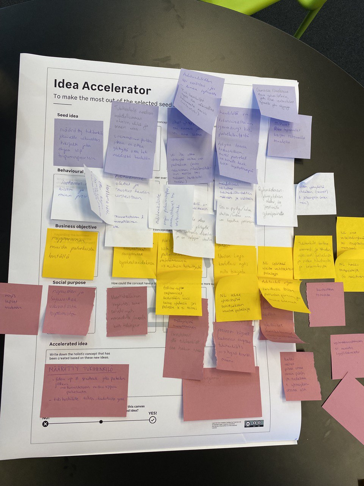

Strategic service design for Naisten linja
My role: Strategic service designer, interviewer, alternating project manager
Focus: Domestic violence, designing for a vulnerable group, Lean Service Creation
PROJECT BRIEF
Client: Naisten Linja, a non-profit organization helping women who face violence.
Brief: Naisten Linja wanted to improve their service offering. They wanted to strategically reposition themselves in the changing field.
Challenge: To explore how the service field looks and feels from the end-user's perspective. We were looking for gaps in the customer service map, where Naisten Linja could reposition themselves.
OUR SOLUTION
Target group: Women who have separated from their violent partner.
Problem worth solving: Loneliness after breakup
Solution: A concept called Palvelukummi (Service Support Person) who would be responsible for being in touch with the woman who has experienced violence to guide her to the services she needs and support her by listening and being present.
OUR APPROACH
DATA GATHERING
- 9 semi-structured interviews in 2 rounds
- questionnaire survey
TOOLS
- Lean Service Creation -methods (business objective, societal impact, customer grouping, ideation, concept creation, concept validation, customer journey mapping, business model canvas, MVP)
- Fake ad
- Miro board

DELIVERABLE
1. Palvelukummi -concept (Toiminta-malli pictured earlier)
2. User journey map including the concept (picture below)
3. Final presentation to customer
MY CONTRIBUTIONS
I was involved in all parts of the lean service creation method. I was alternatively the project manager. I conducted multiple interviews and also transcribed other interviews. I was in charge of vizualising the customer journey map and narrating that part of the pitch.
LEARNINGS
Creating a tangible concept from start to finish
Experience and confidence in consultancy
Working with a vulnerable topic
Information visualization
Pitch creation, narrating a project
Groupwork practices
Trusting the process
Trusting the team and the product